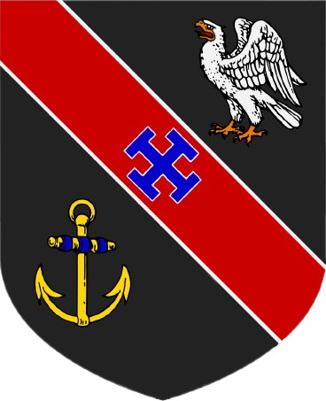
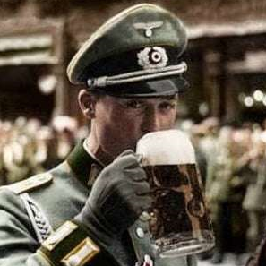
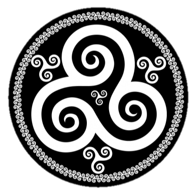
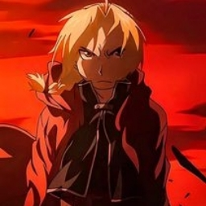
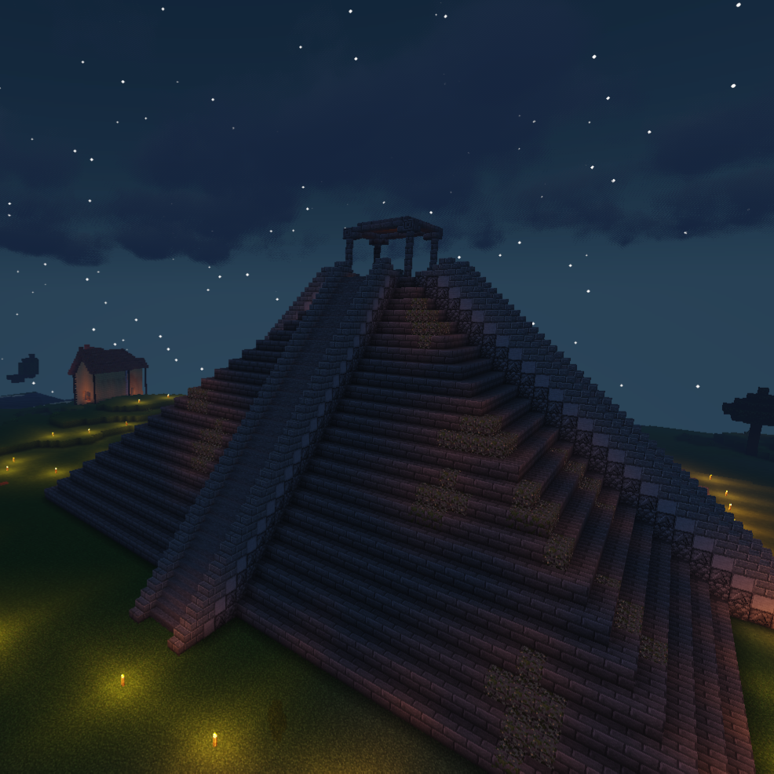
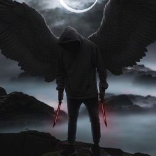
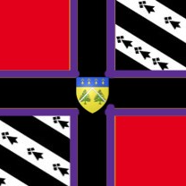
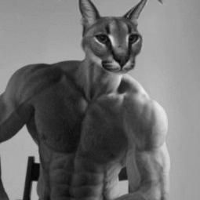

|
Afficher le Mot de Passe |

|
| Empire Breton - SSB | Menu Principal |
|
Afficher le Mot de Passe |
|
Bienvenue au Bureau et archives du SSB. Le SSB, en forme longue les Services Secrets Bretons, Servijoù Kuzh Breizh (br), est un grade secret dans l'Empire Breton qui donne le privilège à ses agents, #🎖-ssb  et 🔊🎖 SSB sur le serveur discord de l'Empire Breton.
Ils participent entre autres à des missions de renseignements.
et 🔊🎖 SSB sur le serveur discord de l'Empire Breton.
Ils participent entre autres à des missions de renseignements.

I - Liste des Membres du SSB 
Les Membres du SSB ne se distinguent pas des autres membres pour se fondre dans la masse. Cependant, ils possèdent tous le rôle @☘️, dont le trèfle rappelle le symbole de l'Irlande.
| Kommisar Hans FRIESS @gunter3322 |
Breizhdemon @breizhdemon35 |
Snurf @snurfouuh |
[Prince] RLRGC @rlrgc |
[Prince] Sir Ghostjoker @ghostjoker95 |
Marius mf107 |
|  |  |  |  |  |  |
| Kommisar 🌟 | Lieutenant ⭐ | Lieutenant ⭐ | Agent 💫 | Agent 💫 | Agent 💫 |
| @Prince 🚨 | @40 - Commandant | @30 - Capitaine | @Prince 🚨 | @Prince 🚨 | @30 - Capitaine |
Les membres du SSB peuvent à tout moment décider d'un Interrogatoire envers un membre. Les conditions nécéssaires sont d'une part d'avoir un motif, comme par exemple une preuve d'un message visant à promouvoir la Normandie, et d'autre part de faire cela dans le respect des règles, sans insultes. Les motifs d'Interrogatoire ne sont pas des motifs de Modération. Vous pouvez toujours demander des détails et des confirmations d'Interrogatoire à @Hans Friess.
Le SSB dispose d'une liste noire répertoriant tous les membres ayant tenu publiquement un discours anti-breton, pro-normand, ou autres discours du même type. Beaucoup de ces preuves proviennent de missions de renseignements sur d'autres serveurs.
| Pseudo | Nom d'Utilisateur | ID | Date | Motif | Source | Preuves | Interrogatoire |
|---|---|---|---|---|---|---|---|
| Cryptaux | Cryptaux#6065 | 668155813499502608 | 21/01/2023 | Pro-Normand | Opération Raptor |  |
NON |
| Lassassain | Lassassain#1780 | 796035217822842911 | 21/01/2023 | Pro-Normand | Opération Raptor |   |
NON |
| LéoM59 | LéoM59#2519 | 400350796685770752 | 21/01/2023 | Pro-Normand | Opération Raptor |
    |
NON |
| TPS.7567 | TPS.7567#2557 | 803318492815425557 | 21/01/2023 | Normand | Opération Raptor |   |
NON |
| 𝑬𝒎𝒎𝒂 𝒐𝒇 𝑵𝒐𝒓𝒎𝒂𝒏𝒅 | 𝑬𝒎𝒎𝒂 𝒐𝒇 𝑵𝒐𝒓𝒎𝒂𝒏𝒅#8912 | 226002818912223234 | 20/01/2023 | Normande | Raptor SW |  |
NON |
| Nassim* | [Comptes Multiples] | 11/05/2022 à 13/03/2023 |
Raideur Connu, Parfois Anti-Breton |
Empire Breton | OUI | ||
| Giga chad | ?#???? | ?????????????????? | ??/??/???? | Anti-Breton | Empire Halgoron ? |  |
NON |
| Admin | Alix Spectre. |
.🗿#9501 | 1061372899233116161 | Pro-Normand | Empire Halgoron |  |
NON | |
| Halgoron | Halgoron#7519 | 1009574688760025173 | 06/04/2023 | Pro-Normand, Pro-Breton Mitigé | Empire Halgoron |   |
NON |
| K7odio | K7odio#2011 | 383504890191675394 | 19/04/2023 | Pro-Normand | Empire Halgoron |  |
NON |
* L'ajout de Nassim à la Liste Noire a été demandé par le Kommisar Hans Friess le 15/05/2023. Nassim est un membre alsacien qui possède plusieurs comptes et est un raideur connu. Il est recommandé de le garder à l'œil sans toutefois intervenir trop brusquement.
Le SSB possède également une Liste Blanche, sur laquelle est notée la liste des membres de confiance dont le SSB n'a pas besoin de soupsonner quoi que ce soit en rapport avec les missions du SSB.
| Avatar | Pseudo | Nom d'Utilisateur | ID | Rôle | Note |
|---|---|---|---|---|---|
 |
Marius-sgweier/bonheddigChevrier | mf107#9928 | 846322333820125185 | @20 - Lieutenant-Commandant | |
 |
Tylt | tylt#5582 | 689118752008175646 | @10 - Lieutenant | |
|  | 𝐀𝐧𝐨𝐫 𝟏𝐞𝐫・Roi de St Brieuc | Arthurus Rex Britonum#0140 | 400350796685770752 | @30- Capitaine | Ancien @Prince 🚨 |
Le Conseil de Sécurité est un groupe limité de personnes qui donne aux membres de confiance la possibilité de cliquer sur un bouton dans le salon #🚨-conseil-urgence pour obtenir la Permission de Réduire au Silence les membres. Cela permet aux membres de confiance de pouvoir protéger l'Empire Breton en cas de Raid où les Modérateurs et Administrateurs seraient inactifs. Ce conseil a été initialement créé pour contrer un potentiel Raid de Nassim (Voir #ListeNoire)
Tous les agents du SSB ont accès à ce conseil d'urgence, auxquels s'ajoutent d'autres membres hors-Staff et hors-SSB.
 |
| Logo du Conseil de Sécurité |
Les Membres du SSB peuvent accéder ici aux documents joints ci-dessous. Il s'agit des archives documentaires du SSB qui sont ici pour but de consultation ou d'enquête. Cliquez sur les Icônes pour avoir un aperçu.

2.51 Mo. Feuille de Recrutement de l'Agent Breizhdemon le 18/10/2022. |

872 Ko. Lettre du Gouvernement Breton au Bureau du SSB le 26/08/2022. |

1,89 Mo. Visa d'Angèle de nationalité américaine pour la Bretagne avec le motif travail le 29/07/2022. |

4.92 Mo. Traité entre l'Empire Breton et le Royaume de Belgique sous le nom de Traité de Lorient le 09/08/2022. |
872 Ko. Version cryptée de la lettre du Gouvernement Breton au Bureau du SSB du 26/08/2022, le document date cependant du 2 septembre. |